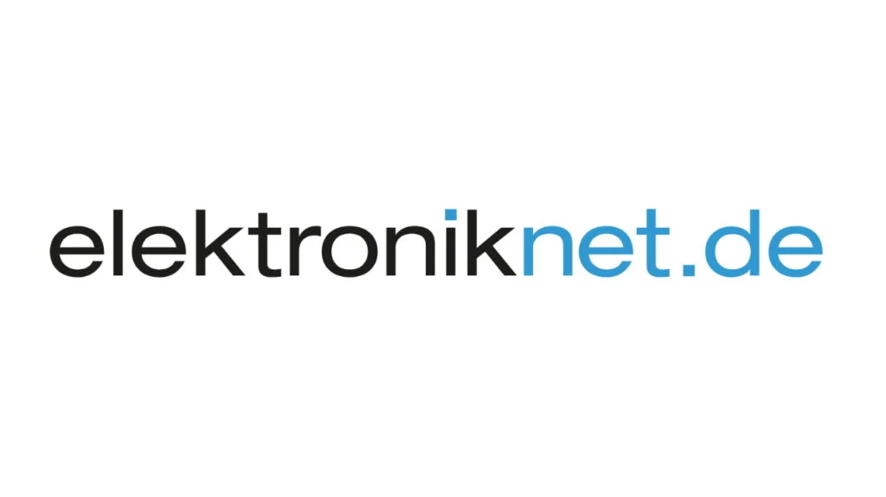

Das Schweizer Unternehmen qiio, das sich auf Mobilfunk-IoT-Anwendungen
spezialisiert hat, erhält die AT&T-Network-Optimized-Zertifizierung. Sie gilt für qiios Geräte »q200
Guardian«, »Concentrator XN« sowie das Development Kit, die alle auf Azure Sphere basieren.
elektroniknet.de artikel hier lesen:
Für IoT-Module: Qiio erhält AT&T-Zertifizierung – Hardware – Elektroniknet